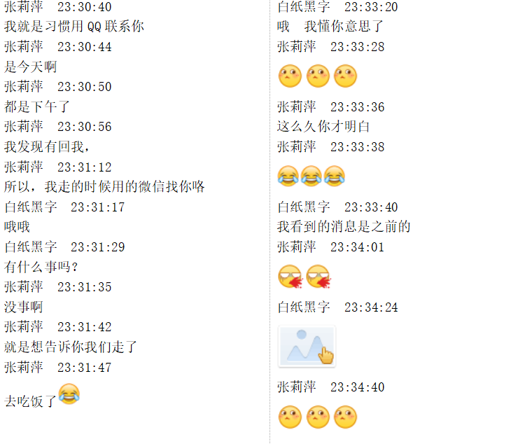
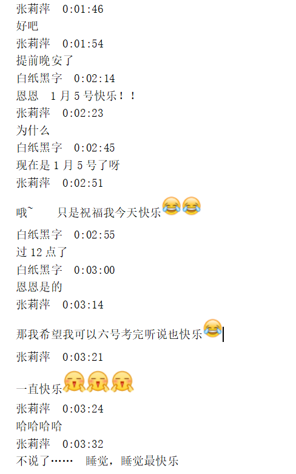
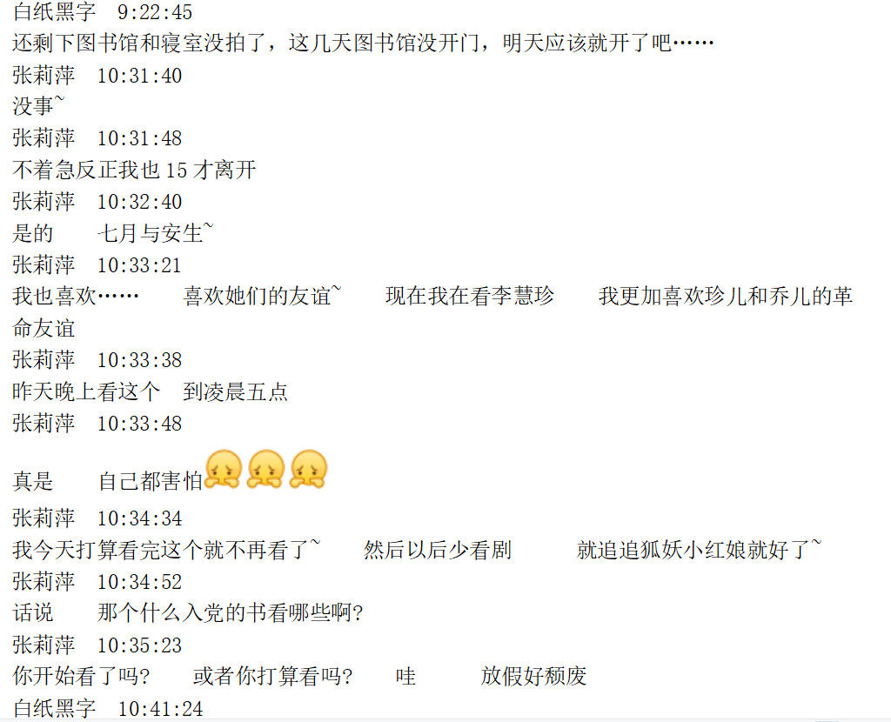
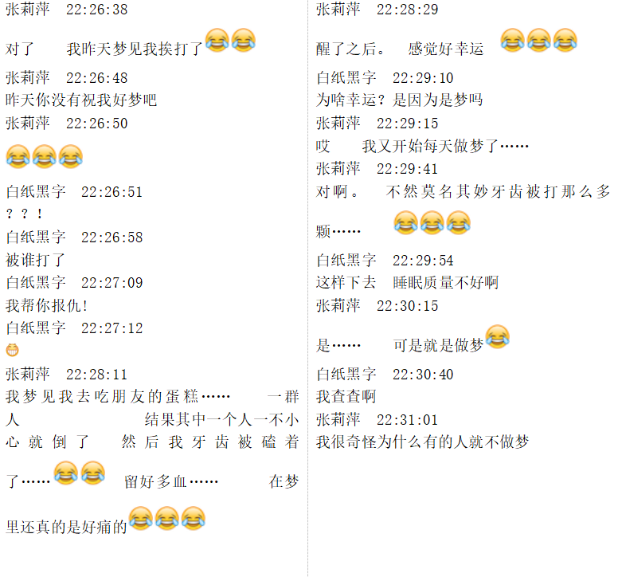
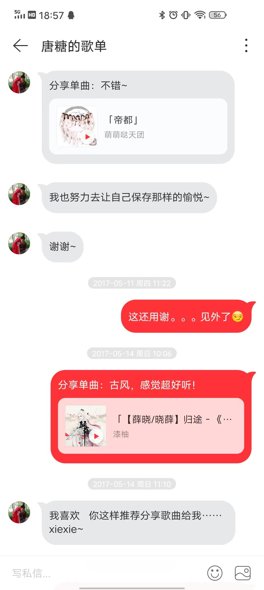
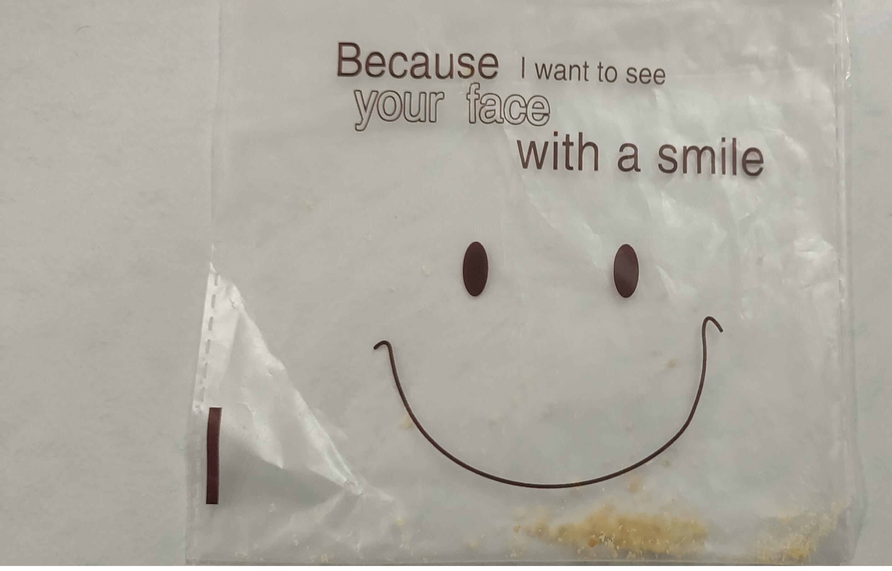
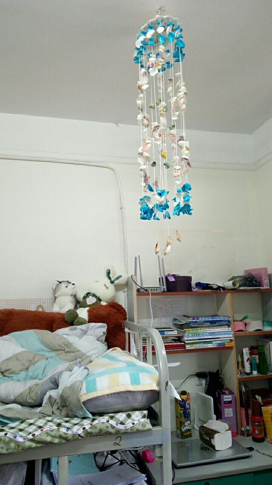
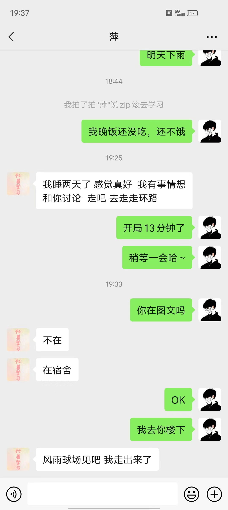
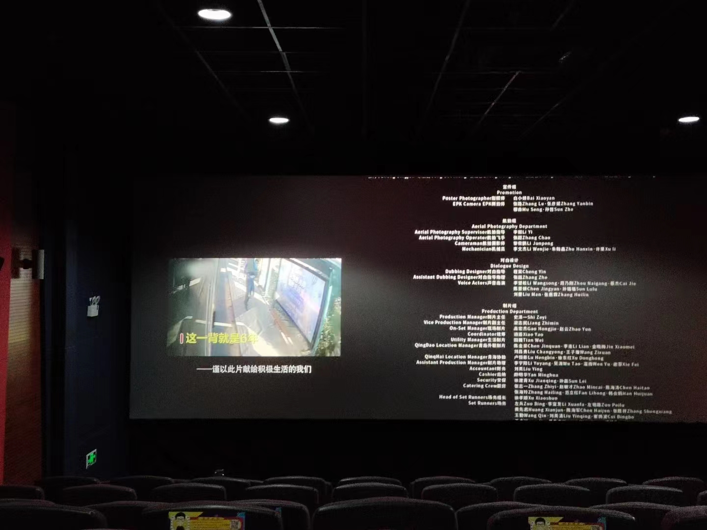

大一刚入学时遇到活泼的她，那时候我还是一个和女孩子说话会腼腆的小男孩。现在嘛……脸皮比城墙还厚哈哈哈！很多事情都不care了，而她一直是很难忘记的。

18岁，快快乐乐的她，后来我们渐渐融入社会，做了许多学生工作，纷杂世事形成信息洪流裹挟着我们，因而成为焦虑贩卖的受众。不变的是她依旧爱睡觉哈哈哈，咋能那么能睡嘞，好羡慕呀！

看剧绝对是她的爱好了，视频软件会员都有好多。作为一个重庆娃，她习惯吃辣，喜欢吃咸肉粽，不喜欢吃饼，喜欢吃葡萄，爱喝一点点家的奶绿，饮料钟意茶Π和纯水……
QQ聊天养火花，后来巨轮也有了。现在想想那时候真傻真天真，会做这些小孩子爱做的事情，相识多年其实并没有真正在一起过，我那时候不成熟，控制不好自己的情绪，也没有确定的未来，像她这样的女孩子需要一个能照顾她方方面面的男生。在这些年里，我也在成长，会反思，在失败中进步，在自己原则基础上做大做强哈哈。

不知道多少次做梦梦到你，这就是日有所思夜有所梦吗。我总觉得你就是冥冥中注定的那个人，就如同我能在人群中一眼找到你，转角处总能遇见你。你有次说梦到和我还有我姐姐在走路，那时候真的很开心了，原来我也是你在乎的人，不是同学不是普通朋友。
据说是你第一次化妆，还是姐姐给你化的，很漂亮啊，和花一样~

我喜欢分享音乐给你，并且在这个过程中逐渐摸清你的音乐品味，自认为推荐的比网易云推荐算法精准哦。你声音很好听，唱歌也好听，我都有听过好多次。我不知道什么时候被你吸引，可能是在某次约自习后，也可能是听过你唱的歌，抑或是某天夜晚走在东华梧桐树下。
收藏了许多你的照片，满满的回忆~这张你是C位哦！太好看啦！我在后面一排哈哈

你亲手做的小饼干很好吃呀，还有小日历、小唇膏、台灯（还能放音乐hhh）、零食水果……
我们也会删好友，但是每年的生日都不会相互忘记。那天生日我一上午都想着你还能记起我生日嘛，终于收到祝福，而且是第一个，超级开心哈哈哈，还厚着脸皮要礼物，是不是得寸进尺[滑稽.jpg]

床上有我送的汪汪，风铃是弟弟送的，其实还有很多礼物哈哈，有口红、香水、零食……

一个平平无奇的夜晚，因为你变得不平凡了。那晚的微风很温柔哇！

电影很好看呐，猪肚鸡也好吃，和你在一起时间过得总是很快。转眼都要毕业了，我们会越来越好滴[笑]。